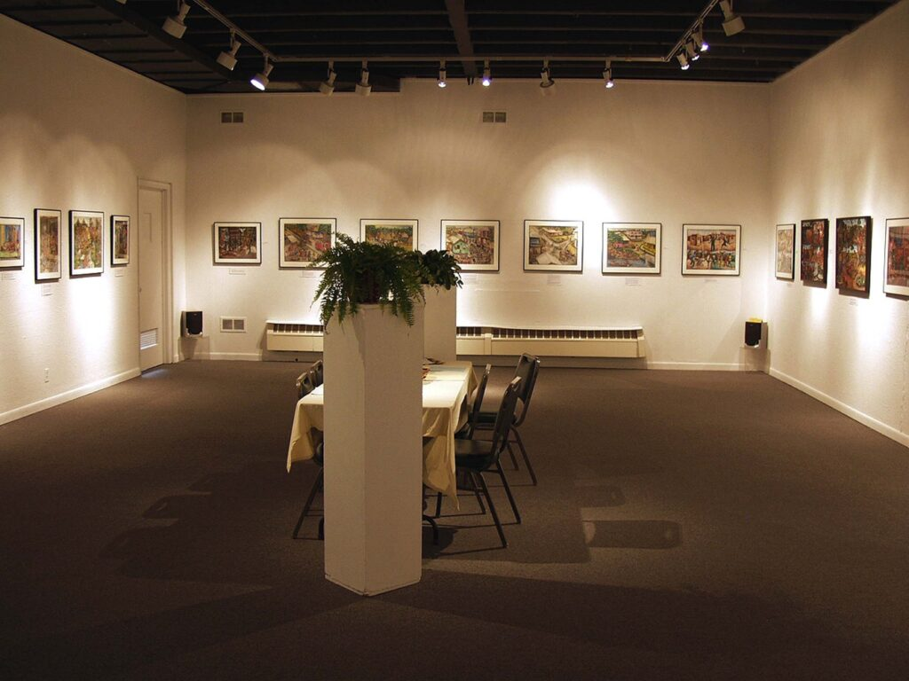
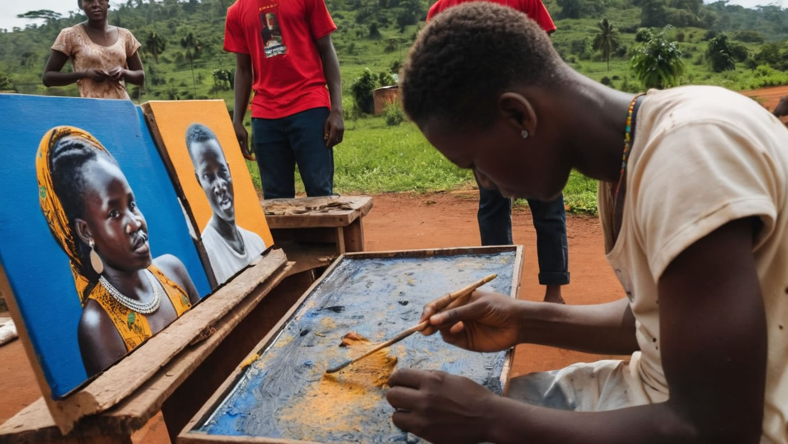

Creative Arts & Cultural Expression
AYM uses art to transform society, tell African stories, and create opportunities for young people across the creative industries.
Our approach to the creative economy
Develop emerging talent
Offer young artists skill development and opportunities to share their work with wider audiences.
Tell African stories
Use art to communicate African experiences, perspectives and cultural heritage.
Grow creative livelihoods
Support the economic viability of youth employment across artistic genres.
Representations of Violence
Between 1991 and 2001, Sierra Leone's civil war claimed an estimated 50,000 lives. Through 38 paintings and accompanying narrative, young artists gave form to a national trauma and opened a global conversation.
Imagining Africa: Building Artistic Bridges Through Perception
A program that challenges one-dimensional narratives of Africa by connecting artists and audiences across continents.

Still have questions?
Can't find the answer you're looking for? Please chat to our friendly team.